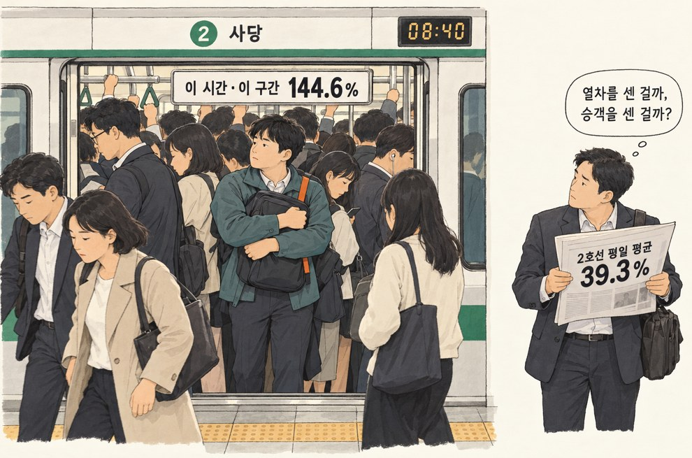
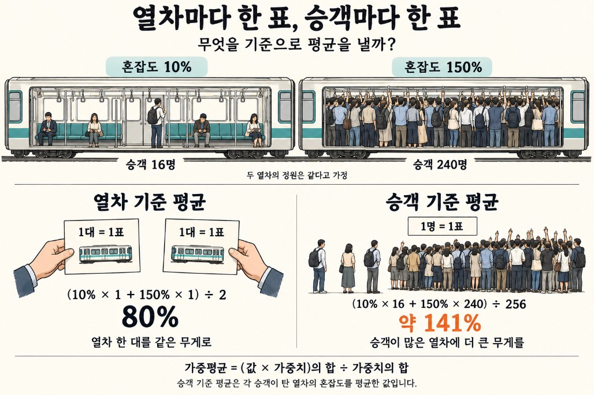
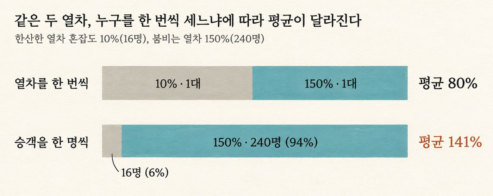
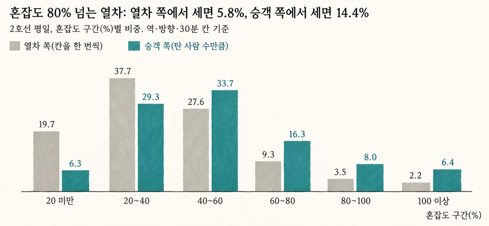

[그 숫자, 누가 셌어요? 3] 2호선 혼잡도 39%, 당신이 겪은 혼잡도는 52%
같은 자료로 열차를 세면 39%, 승객을 세면 52%. 가중평균과 검사 역설을 지하철 혼잡도로 설명합니다.
그 숫자, 누가 셌어요? · 8편 중 4번째 글
연재 목차 보기
대표가 준비 중인 책 『그 숫자, 누가 셌어요?』의 원고를 연재합니다. 숫자는 모두 한국의 공개 자료를 내려받아 대표가 직접 다시 계산했습니다. 자료는 저장소에서 받을 수 있습니다.
출근길 지하철에서 숨 돌릴 틈이 있는 날은 드뭅니다. 그런데 공공 자료에서 지하철 혼잡도를 찾아보면, 평균은 늘 생각보다 낮게 나옵니다. 내가 탄 열차만 유독 붐볐던 걸까 싶다가도, 매일 같은 경험을 하는 사람이 나 하나는 아닐 겁니다. 같은 노선, 같은 시간을 다룬 숫자인데 왜 내 경험과 이렇게 멀까요? 그 평균은 무엇을 세어서 나온 숫자일까요?
아침 8시 40분, 사당역
평일 아침 8시 40분, 2호선 사당역 승강장. 열차 문이 열리자 안쪽에 서 있던 사람들이 한꺼번에 밀려 나오고, 기다리던 사람들이 다시 몸을 밀어 넣습니다. 가방을 가슴 앞에 꼭 안고, 휴대폰을 꺼낼 자리도 없이 방배, 서초, 교대까지 갑니다.

서울교통공사 자료에서 이 시간, 이 구간의 혼잡도는 144.6%입니다. 열차 한 량에 탈 수 있는 정원보다 더 많이 타면 100%를 넘습니다. 1~8호선 평일 자료 전체에서 가장 높은 숫자입니다.
그런데 같은 자료에서 2호선 평일 혼잡도를 모두 모아 평균을 내면 이런 숫자가 나옵니다. 39.3%. 정원의 5분의 2. 한 칸 정원이 160명이니 60명 남짓, 좌석이 대략 차고 몇 사람이 서 있는 정도입니다.
매일 아침 사당역에서 밀려 타는 사람에게 이 숫자는 거의 농담처럼 들립니다.
평균 39%면 대체로 여유롭다?
이 숫자는 틀린 계산이 아닙니다. 2호선 52개 역, 두 방향, 새벽 5시 30분부터 밤 1시까지 30분 단위로 잰 혼잡도를 모두 더해 개수로 나눈 값입니다.
그리고 우리는 보통 이 평균을 이렇게 읽습니다. "2호선을 타는 승객은 평균적으로 혼잡도 39% 열차를 탄다." 사당역 아침은 예외이고, 대부분의 승객은 대체로 여유롭게 탄다는 뜻으로요.
이 읽기에는 빠진 질문이 있습니다. 이 평균이 승객을 센 숫자인지, 열차를 센 숫자인지입니다.
승객에게 물으면 52%
39.3%는 열차를 센 숫자입니다. 새벽 5시 30분의 텅 빈 열차도, 아침 8시 40분의 꽉 찬 열차도 한 번씩 똑같이 셌습니다.
그런데 승객 한 명 한 명에게 "방금 탄 열차는 얼마나 붐볐나요?"라고 물어본다면 답이 달라집니다. 텅 빈 열차에는 대답할 사람이 몇 없고, 꽉 찬 열차에는 대답할 사람이 수백 명입니다.
같은 자료로 승객 쪽에서 다시 세어 봤습니다. 평일 2호선 승객이 탄 열차의 평균 혼잡도는 52.4%입니다. 같은 노선, 같은 자료인데 열차 쪽 숫자보다 13%p, 약 1.3배 높습니다.
차이는 붐비는 쪽으로 갈수록 커집니다. 혼잡도가 100%를 넘는 경우는 열차 쪽에서 세면 2.2%, 승객 쪽에서 세면 6.4%입니다. 열차 쪽에서는 '드문 일'인데, 승객 쪽에서는 그 세 배입니다.
어느 쪽도 거짓말은 아닙니다. 다만 누구를 세느냐가 다릅니다. 그리고 사당역에서 밀려 타는 사람의 경험에 가까운 건 두 번째 숫자입니다.
붐비는 열차에는 사람이 많다
열차가 두 대뿐인 노선을 생각해 봅시다. 한 대는 혼잡도 10%로 한 칸에 16명이 탔고, 다른 한 대는 150%로 240명이 탔습니다. 열차 쪽에서 세면 평균 혼잡도는 (10 + 150) ÷ 2 = 80%입니다.
이제 승객 256명에게 물어봅니다. 16명은 "10%", 240명은 "150%"라고 답합니다. 이 답들의 평균은 약 141%입니다. 승객 256명 가운데 240명, 94%가 150% 열차에 탔기 때문입니다.
열차 쪽에서 세면 붐비는 열차나 빈 열차나 한 표씩입니다. 승객 쪽에서 세면 붐비는 열차는 탄 사람 수만큼 여러 표를 얻습니다. 그래서 승객 쪽 평균은 항상 붐비는 쪽으로 끌려갑니다.
같은 일은 지하철 밖에서도 일어납니다. 학교가 발표하는 '평균 학급 인원'보다 학생들이 실제로 앉아 있는 교실의 평균 인원이 더 많고, 식당의 '평균 대기 시간'보다 손님들이 실제로 기다린 시간이 더 깁니다. 큰 반에는 학생이 많고, 긴 줄에는 손님이 많기 때문입니다.
알아두면 좋은 통계 · 가중평균
우리가 흔히 쓰는 일반적인 평균(산술평균)은 상황이나 대상의 규모와 상관없이 모든 대상을 '똑같이 한 표씩' 다루는 방식입니다. 반면, 대상마다 지닌 '중요도'나 '실제 영향력(사람 수, 거래량 등)'이 다를 때는 그 차이를 반영하는 가중평균을 써야 합니다.

가중평균은 각 값에 무게(가중치)를 곱해서 모두 더한 뒤, 전체 무게의 합으로 나누어 구합니다.
가중평균 = Σ (값 × 가중치) ÷ Σ 가중치
앞서 본 열차 두 대 예시를 가중평균 공식에 적용해 보면 차이가 명확해집니다.
1. 열차 기준 평균 (모든 열차에 가중치 1 부여)
- 텅 빈 열차나 꽉 찬 열차나 똑같이 '열차 1대'로 취급합니다.
- (10% × 1대 + 150% × 1대) ÷ (1대 + 1대) = 80%
2. 승객 기준 평균 (탄 사람 수를 가중치로 부여)
- 승객 1명당 1표씩 반영하여, 사람이 많이 탄 열차에 더 큰 무게를 줍니다.
- (10% × 16명 + 150% × 240명) ÷ (16명 + 240명) ≈ 141%
이처럼 승객이 실제로 느끼는 혼잡도를 정확히 담아내려면, 단순히 '열차 수'로 나누는 것이 아니라 '사람 수'를 가중치로 둔 가중평균을 계산해야 승객들의 진짜 경험(52% 또는 141%)에 가까워집니다. (그림3-3)

가중치를 고르는 일은 곧 '누구를 한 번씩 셀 것인가'를 정하는 일입니다. 열차를 한 번씩 세면 열차 쪽 평균, 승객을 한 명씩 세면 승객 쪽 평균이 됩니다. 혼잡도는 탄 사람 수에 비례하므로, 혼잡도 자체를 가중치로 쓰면 승객 쪽 평균을 구할 수 있습니다.
값들이 고르면 두 평균은 거의 같고, 값들이 들쭉날쭉할수록 두 평균은 멀어집니다. 모든 열차가 50%로 같다면 승객에게 물어도 50%입니다. 그래서 두 평균의 차이는 "혼잡이 얼마나 한쪽에 몰려 있는가"를 보여 주는 신호이기도 합니다.
통계학에서는 이렇게 '관찰하는 쪽에서 세면 큰 것이 더 자주 잡히는' 현상을 '검사 역설(inspection paradox)'이라고 부르기도 합니다.
열차 쪽에서, 승객 쪽에서 세어 봤다
서울교통공사 혼잡도 파일에서 2호선 평일 자료만 골랐습니다. 역과 방향(내선·외선), 30분 단위 시간대마다 값이 하나씩 있습니다. 이 값 하나를 '칸'이라고 부르겠습니다. 운행이 없는 시간의 0을 빼면 3,978개 칸입니다.
열차 쪽 평균: 칸마다 한 번씩 센 산술평균. 39.3%
승객 쪽 평균: 칸마다 혼잡도만큼(탄 사람 수만큼) 무게를 준 가중평균. 52.4%

그림 3-4에서 회색 막대는 왼쪽(한산한 쪽)에, 파란 막대는 오른쪽(붐비는 쪽)에 몰려 있습니다. 혼잡도 20% 미만인 칸은 전체의 19.7%지만, 그런 열차를 탄 승객은 6.3%뿐입니다. 반대로 80%를 넘는 칸은 5.8%인데, 그런 열차를 탄 승객은 14.4%로 거의 일곱 명 중 한 명입니다.
시간대로 보면 더 분명합니다. 출근(7시 30분~9시 30분)과 퇴근(5시 30분~7시 30분)의 4시간은 하루 운행 시간의 20.5%인데, 승객 쪽에서 세면 전체의 30.6%를 차지합니다. 중앙값도 마찬가지입니다. 열차 쪽에서 세면 36.3%, 승객 쪽에서 세면 46.8%입니다.
다른 노선도 같은 방향이었습니다. 1~8호선 모두 승객 쪽 평균이 열차 쪽 평균보다 높았습니다. 혼잡이 특정 시간과 구간에 몰릴수록 두 숫자는 더 멀어집니다. 그래서 노선별 평균 혼잡도가 비슷하게 나온 두 노선이라도, 승객이 실제로 겪는 혼잡은 크게 다를 수 있습니다.
52%도 아직 낮게 센 숫자다
승객 쪽에서 센 52.4%도 승객이 실제로 체감하는 혼잡보다는 낮을 가능성이 큽니다. 이 자료에는 여전히 '열차 쪽'에서 센 흔적이 세 군데 남아 있고, 세 가지 모두 숫자를 아래로 끌어내리는 요인으로 작용합니다.
30분을 하나로 묶었다: 자료의 값 하나는 30분 동안 그 역을 지난 여러 열차의 평균입니다. 예를 들어 사당역의 144.6%는 8시 30분과 9시 사이 열차들의 평균일 뿐이며, 그중 가장 붐빈 개별 열차는 이보다 훨씬 높습니다.
열차 한 대를 하나로 묶었다: 이 자료의 혼잡도는 열차 칸별로 나뉘어 있지 않습니다. 계단과 환승 통로 앞의 칸은 훨씬 더 붐비고, 승객들은 당연히 붐비는 칸에 더 많이 탑니다. 앞서 본 4절의 원리가 열차 안에서 한 번 더 일어나는 셈입니다.
열차가 몇 번 지났는지는 반영되지 않았다: 출퇴근 시간대에는 열차가 더 자주 다닙니다. 같은 30분이라도 그 시간대에 탄 사람이 훨씬 많다는 뜻인데, 이 자료에는 열차 운행 횟수 정보가 없어서 30분마다 열차가 같은 수만큼 다닌다고 가정하고 셌습니다. 붐비는 시간대의 비중이 그만큼 덜 반영되었습니다.
이 세 가지 요인 모두 승객이 겪는 실제 혼잡도를 52.4%보다 더 높게 만드는 방향으로 작용합니다. 얼마나 더 높은지는 이 파일만으로는 알 수 없지만, 묶음을 하나씩 풀 때마다 승객 쪽 숫자는 계속 올라가게 됩니다.
누구를 셌나?
다시 아침 8시 40분의 사당역으로 돌아갑니다. "2호선 평균 혼잡도 39%"라는 말을 들으면 이제 우리는 이렇게 물을 수 있습니다.
"그건 열차를 센 숫자인가요, 승객을 센 숫자인가요?"
열차를 운영하는 측에게는 열차 쪽 숫자가 필요합니다. 몇 대의 열차를 더 투입할지, 어느 시간대에 객차를 더 붙일지 정할 때 유용하기 때문입니다. 하지만 "승객이 얼마나 힘들게 출퇴근을 하나"를 알고 싶다면, 당연히 승객 쪽에서 세어야 합니다. 같은 데이터라도 어느 쪽에서 세느냐에 따라 39%가 되기도 하고 52%가 되기도 합니다.
이 평균은 도대체 무엇을 한 번씩 셌는가? 열차인가, 승객인가? 학급인가, 학생인가?
마치며
2호선 평일 혼잡도는 열차를 세면 39.3%, 승객을 세면 52.4%였습니다. 혼잡도 80%가 넘는 경우는 열차로 세면 5.8%이지만, 승객으로 세면 14.4%로 뛰어오릅니다.
콜센터의 평균 대기 시간도 같은 방식으로 갈립니다. 시간대마다 한 번씩 단순하게 세면 한가한 시간의 짧은 대기가 평균을 끌어내리지만, 고객마다 하나씩 세면 붐비는 시간에 오래 기다린 사람들이 훨씬 많이 반영됩니다. 고객이 겪는 실제 기다림을 알고 싶다면 반드시 고객 쪽에서 센 숫자를 따로 요구해야 합니다.
직접 확인해 보기
파일: github.com/einfollab/basic_statics ▸ 3.서울지하철혼잡도 ▸ 서울교통공사_지하철혼잡도정보_20260630.xlsx
챗GPT에게 이렇게 물어보세요
파일을 올린 뒤 아래 문장을 하나씩 붙여 넣으면 됩니다.
'평일' 시트에서 2호선만 골라 줘. 시간대 열을 한 열로 모아(긴 형식), 혼잡도가 0인 칸은 빼 줘.
혼잡도의 단순 산술평균과, 혼잡도 자체를 가중치로 쓴 가중평균(혼잡도 제곱의 합 ÷ 혼잡도의 합)을 각각 계산해 줘. 두 값이 각각 '열차 쪽'과 '승객 쪽' 평균이 되는 이유를 설명해 줘.
확인할 것
이 숫자가 나오면 맞습니다. 2호선 평일 3,978칸에서 단순평균 39.3%, 가중평균 52.4%입니다.
더 많은 질문과 파일 설명은 저장소 폴더의 README에서 볼 수 있습니다.
자료 출처
서울교통공사 「지하철 혼잡도 정보」, 서울 열린데이터광장 OA-12928, 2026년 6월 30일 기준 파일.
분석 범위: 2호선 평일 52개 역 × 내선·외선 × 30분 단위 39개 시간대, 혼잡도 0(운행 없음) 234개 칸을 뺀 3,978개 칸.